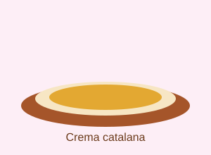

Crema Catalana
Aquesta és la recepta de la crema catalana,
un postre molt popular a Catalunya.
Fotografia del plat

Ingredients
- 1 litre de llet
- 6 rovells d'ou
100 g 150 g de sucre- 1 branca de canyella
Preparació
- El 1r pas és escalfar la llet amb la canyella.
- El 2n pas és batre els rovells amb el sucre.
- El 3r pas és barrejar-ho tot i coure-ho a foc baix.
- El 4t pas és deixar-ho refredar i cremar el sucre per sobre.
Consells
És un postre molt fàcil de fer i queda deliciós.
L'aigua (H2O) no hi intervé, només la llet.
Consell: no deixis que bulli, perquè es pot tallar.
Més informació
Pots llegir més sobre aquest postre a la
Viquipèdia.